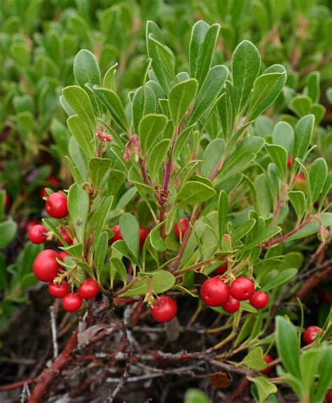
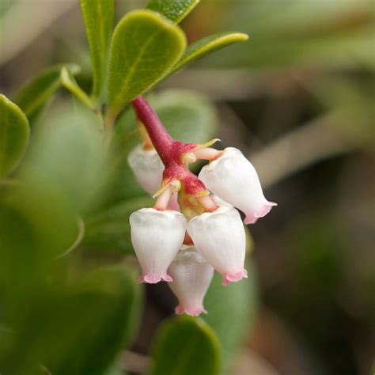

Kinnikinnick (Arctostaphylos uva-ursi)
Fruit: tl’íkw’en, Bush: tl’íkw’enay̓


Planting
Kinnikinnick is a low-growing shrub that thrives in dry, sandy, or rocky soils. Follow these steps for successful planting:
- Choose a sunny or partially shaded location with well-drained soil.
- Remove any weeds or grass from the planting area.
- Dig a hole slightly larger than the root ball and place the plant in the hole.
- Backfill the hole with soil and gently firm it around the plant.
- Water the plant regularly during the establishment period.
Usage
Kinnikinnick has cultural and practical uses:
- The leaves of kinnikinnick are used in traditional Indigenous smoking mixtures.
- The plant has cultural significance and is used in ceremonies and rituals.
- Kinnikinnick is also popular as a low-maintenance ground cover in gardens.
Environmental Impact
Kinnikinnick is ecologically valuable in several ways:
- Its dense growth provides habitat and shelter for small animals and birds.
- The plant helps control erosion on slopes and stabilizes sandy or rocky soils.
- Kinnikinnick contributes to the overall biodiversity and aesthetics of natural landscapes.